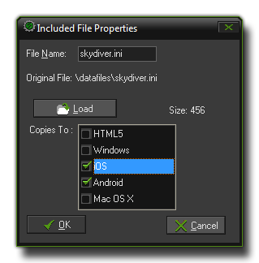

Including Files 包含文件
本章讲述了如何包含外部文件到你的游戏中。
This section deals with including external files in your game.
GameMaker:Studio并不只能局限于使用那些你在IDE中创建的资源，事实上在主界面的资源列表中有一项专门的分类叫做 Included Files。在这里你可以向 GameMaker:Studio 中加载各种类型的文件（你甚至可以给它们创建子文件夹)。这些文件将会被作为游戏的一部分打包进目标平台可执行文件中。比如说在生成 windows 平台游戏时这些文件会被打包进 *.exe 文件中并且在运行时被解包出来，而在 HTML5 平台这些文件会被包含在 html5_game 文件夹中并且储存在服务器上。
注意 : 如果你在使用 GameMaker:Studio 免费版 你每个游戏只能包含最多5个文件。更多细节参见
这里。
GameMaker:Studio is not just limited to the resources that you create within the program as it has a special section on the resource tree of the main window for Included Files. Here you can
load different file types (and even create sub-directories for them) into GameMaker:Studio and they will then be included in the final game as part of the final package for the target platform. So, for example,
in a windows game they will be bundled within the *.exe and exported when run, or in HTML5 they will be included in the html5_game folder and stored on the server.
NOTE : If you are using the Free version of GameMaker:Studio you are limited to a maximum of 5 included files per game. For more details see
here.
要向资源中添加一个文件你必须右击资源列表中的 Included Files 项，然后选择 Create Included File；或者如果你想要创建一个文件夹来储存其它文件，那么选择 Create Group。随后软件会提示你添加一个或多个你选择的文件到列表中。当文件被添加到列表中后你可以右击它选择 "Properties" 来编辑这个文件的属性：
To add a file to your resources you must right-click on the Included Files section of the resource tree and select Create Included File or, if you want to create a sub-directory to store other files,
Create Group. This will then prompt you to add a file, or files if your select more than one, to the list. Once it has been added you can right-click on it and select "Properties" to edit the properties
of the file:

在这里你可以修改 File Name 这一项来重命名文件。 在文件名下方还有一系列选项用来设置这个文件需要被包含进哪些目标平台的程序中。如果你只希望在你用浏览器运行这个游戏时这个文件才会被解包出来， 那么你应当只选择“HTML5”这一项；如果你只希望它在安卓或IOS平台上使用那么你应当只选择这两项；其它同理。如果你一个平台都没有选择的话那么这个文件就根本不会被解包出来。这个功能在你想要用 配置管理器
来储存特定的配置和解包相关文件时显得尤为有用。
一旦你点击了“OK”后文件就会被保存在你当前工程 *.gmx 文件夹下的一个叫做 data-files 的文件夹中。 如果你在添加文件时更改了文件的名字，那么这个文件将会用新的名称保存。请注意从现在开始你应当只去修改这个文件夹下的文件而不是你的原始文件（除非你打算重新包含它们，但是通常这都是不必要的）。
Here you can rename the file if you choose by changing the File Name. Beneath the file name there are also a series of options for the target platform that this included file should be copied to. If you
wish it to be only exported when you run the game in a browser, then you would only tick the "HTML5" box, and if you want it to be exported only to Android and iOS targets you would tick those, and so
on. If you choose not to tick any targets then that file will not be exported at all. This option is especially useful for those that wish to make use of the Configurations
Manager to store certain configurations and export specific files depending on them.
Once you click on "OK" the file will be stored with your current project in its own folder called data-files found in the project *.gmx directory. If you have chosen to change the name of the
file when you added it to the resource tree, then the file will now be stored with that new name. Please note that from now on you should edit the files stored in this folder and not the original files (unless
you plan on including them again, but generally there is no need).
- noisyfox -